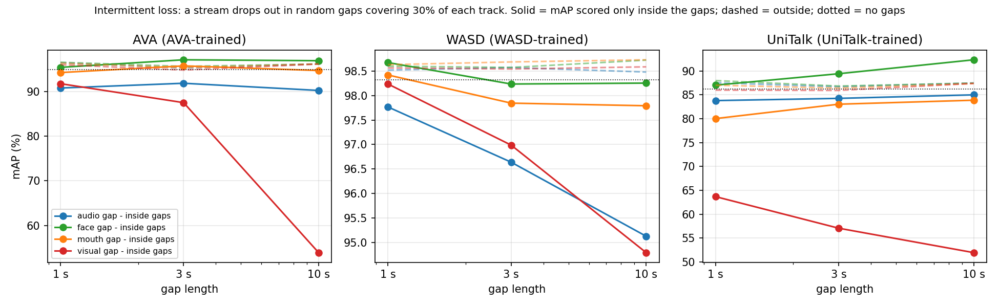

The same clips as the showcase, re-scored by the same model with input streams removed. Nothing is retrained: the stream is simply absent at the input and the fusion works with what remains. Scores are from the stored evaluation runs.
Four separate videos of the same moment. No audio: the model was fed silence, and this clip carries no audio track. Mouth dropped: the model receives no mouth crop, so the mouth region of every face is masked. Face dropped: the model receives no face crop but still gets the mouth crop, so the face is masked except the mouth. Boxes and scores in each video are what the model output under that condition. Press play all to run the four together.
| all streams | no audio | mouth dropped | face dropped |
|---|---|---|---|
| 100.0% | 100.0% | 100.0% | 15.9% |
| all streams | no audio | mouth dropped | face dropped |
|---|---|---|---|
| 100.0% | 94.0% | 100.0% | 100.0% |
| all streams | no audio | mouth dropped | face dropped |
|---|---|---|---|
| 99.2% | 97.8% | 99.3% | 99.3% |
| all streams | no audio | mouth dropped | face dropped |
|---|---|---|---|
| 100.0% | 100.0% | 100.0% | 100.0% |
| all streams | no audio | mouth dropped | face dropped |
|---|---|---|---|
| 96.8% | 97.2% | 96.8% | 97.0% |
| all streams | no audio | mouth dropped | face dropped |
|---|---|---|---|
| 100.0% | 100.0% | 100.0% | 100.0% |
A stream is removed for random stretches covering 30% of each track (seeded), and the model is scored only inside the gaps. Left panel: the clip with all streams. Right panel: the gap run — an amber border and banner mark every frame in which the stream was missing, and the boxes show what the model output at that moment.
Clip accuracy: no gaps 99.0% · gap run, all frames 77.2% · inside the gaps 61.0% (520 frames)
Clip accuracy: no gaps 97.4% · gap run, all frames 83.5% · inside the gaps 77.7% (381 frames)
Clip accuracy: no gaps 98.5% · gap run, all frames 81.1% · inside the gaps 65.7% (2086 frames)
Clip accuracy: no gaps 84.6% · gap run, all frames 62.0% · inside the gaps 33.1% (975 frames)
Clip accuracy: no gaps 96.1% · gap run, all frames 96.0% · inside the gaps 95.5% (242 frames)
Clip accuracy: no gaps 100.0% · gap run, all frames 100.0% · inside the gaps 100.0% (768 frames)
Clip accuracy: no gaps 100.0% · gap run, all frames 100.0% · inside the gaps 100.0% (270 frames)

| Model / dataset | no gaps | audio 1s | audio 3s | audio 10s | face 1s | face 3s | face 10s | mouth 1s | mouth 3s | mouth 10s | visual 1s | visual 3s | visual 10s |
|---|---|---|---|---|---|---|---|---|---|---|---|---|---|
| AVA (AVA-trained) | 94.95 | 90.81 | 91.87 | 90.26 | 95.44 | 97.14 | 96.93 | 94.27 | 95.77 | 94.73 | 91.78 | 87.52 | 53.91 |
| WASD (WASD-trained) | 98.32 | 97.77 | 96.64 | 95.13 | 98.67 | 98.24 | 98.25 | 98.42 | 97.84 | 97.79 | 98.24 | 96.99 | 94.79 |
| UniTalk (UniTalk-trained) | 86.19 | 83.80 | 84.27 | 85.00 | 87.04 | 89.43 | 92.35 | 80.03 | 83.05 | 83.88 | 63.68 | 57.06 | 51.95 |
Cells are mAP scored only inside the gaps. “visual” removes face and mouth together. The WASD gap run uses the standard-recipe WASD model; the other pages use the query-mask variant (98.79 vs 98.68 on WASD).